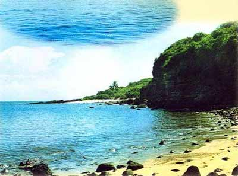
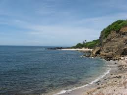
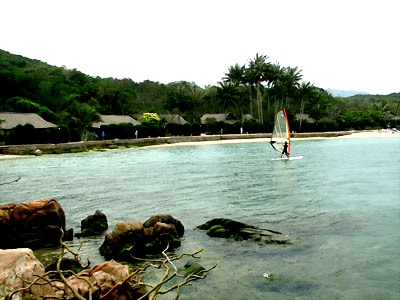

CON CO ISLAND

From Cua Tung Beach Vinh Linh District, Quang Tri Province overlooking the west you will see a blue island floating on the sea as a battleship is defending off; it is Con Co island, also calledother islands Tiger, coma.
Characteristics: Con Co Island off the coast of Vinh Linh about 30km. As an outpost island between the 17th parallel east defending the Fatherland. Not only is the famous island resilience in the American war, there was a of rare beautiful island of the central region.From Con Co island look to the west you will see the color green forest of the coastal ocean of each and white sands surgery before the threshold of the Vinh Moc tunnels. South-west is a strip south of the Ben Hai River, farther Annamites lavender long run. Thanks to that position, but also play a very important strategic significance in the first clash of history when the country was divided both South-North.
Con Co Island has a relatively round shape, with an area of about 4 km ², 8km circumference, height from 5 to 30 meters above the sea level, between the islands own a hill rising to a height of 63m. Although the mainland less than 30km, but with the conventional means have not been able to the island when see wind 6 or higher. Yet in the years to hit the United States, hundreds of defenseless soldiers of Vinh Linh forgot all danger, by means of rudimentary carrying weapons, food from the mainland to the island. Many of whom remain permanently at sea because of strong wind waves or fierce bombing of the enemy.

Abundant vegetation on the island, a small island but with mountains, hills and lush paintings occupy 3/4 area of the island. Forest on the island with exotic tree species in the mainland do not have; squirm more burning trees; straight trees, skin smooth like guava trees but very tall, heavy hardwood and, when bruised resin flow red as blood tree so called "oil". Wild species of potato, banana leaf to more than contribute to sun, rain. Forest on the island also the table, in the fall, as an area amniotic red as filled the island. The fruit tree varieties, papaya, banana, strawberry skin ... Just how green is good, providing food for spirituality, just as a shelter for birds of the air to entertain them. To enrich the landscape and environment on the island and provide more food for the island, in 1989, Quang Tri Province delegation brought 4,000 coconut trees, symbolizing 4000 years of building and defending the country planted on the island. So far, lush coconut and fruit. In the spirit of self-reliance, the soldiers guarding the island also planted a lot of vegetables, flowers and ornamental plants, season, making the face of the island more and more beautiful.
Animal world on the island but not a lot of categories but also quite unique. Heaven, have cuckoo beads, Swallow turns the signal sent to people peace. Underground, small green viper species but very toxic, can be used as drugs. But the most famous stone crabs to close by hand, is abundant and important food sources on the island. Sea, like sea snakes, also known as black, approximately an arm's length, equally poisonous viper, dark wine is a cure for back pain, muscle aches very popular. Under the sea, black sea cucumber, white big toe, long iron hand, is both a precious medicine, and high-end cuisine, on par with bird nests. In addition, the coast has also cone snails, cooked delicious, can take advantage of shell jewelry, fine art ..

The landscape on the island are also improved. From a small island with bombs plowed mercilessly, there have been many spacious house, playing sports, with gravel roads. From the island can communicate easily with the mainland by phone. Items of infrastructure on the island has been gradually improving, most notably the ship berths lock.
Tomorrow, Con Co island will welcome the first citizen from the mainland to settle up now to build Con Co Island Youth-island district of Quang Tri Province. There has been a fertile island, a popular tourist destination attracts tourists from near and far.